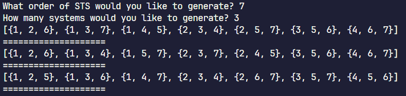

Small Antiperfect Steiner Triple Systems
A combinatorics project focused on generating, enumerating, and analyzing Steiner triple systems, culminating in a first-author peer-reviewed publication.
About the project
I developed scripts and algorithms for the generation, enumeration, and analysis of Steiner triple systems. The work investigates their combinatorial and graph-theoretic structure and contributes new results on small antiperfect systems.
After I demonstrated my programming work to Dr. Schroeder, my Discrete Mathematics professor, he invited me to join his research. The project joined my interest in software development and algorithm design with a growing focus on combinatorics and graph theory.
Work completed
- Implemented a modified Stinson hill-climbing algorithm to construct Steiner triple systems.
- Designed pruning strategies to reduce an exponential search space.
- Parallelized the enumeration of approximately 6,000,000 systems.
- Created reusable Python modules with object-oriented design.
- Translated abstract mathematical properties into testable algorithms.
Clone the repository and run main.py. The program prompts for a valid order and the number
of systems to generate, then prints those systems to the console.
